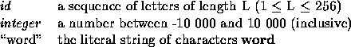
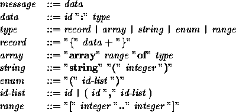
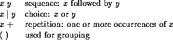
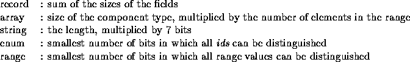

| Bits |
It is not always easy to transfer data from one computer system to the other. You need proper standards for data encoding, and may also need to compress data to save bandwidth and thus reduce costs.
To assist the designer in making implementation choices related to the available band-width, a tool is required that computes the size of each message in bits. The tool has to read and interpret the format of each message to do so.
A message can best be described by giving the underlying grammar, which uses the following terminals:

A message is defined by the following grammar:

Note that the message grammar is specified according to the following notational conventions:

Any two tokens may be separated by an arbitrary amount of white space (blanks, tabs an newlines). White space does not occur within tokens.
The (minimal) amount of bits needed to transmit a message can be computed using the following rules:

The input contains on the first line the number of test cases (N). Each test case will contain message according to the grammar above. Messages may be separated by an arbitrary amount of white space. You may assume that the input is syntactically correct. For each range `L..H', it holds that . A string consists of a positive number of characters.
For each message, output the sentence: 'A "id" message requires S bits.', where id is the identifier of the message and S its size in bits.
3
year : [1970..2030]
team : {
name : string(14)
members : array [1..3] of {
sex : ( male, female )
name : string(20)
age : [16..30]
}
position : [1..40]
}
jurynames : array [1..3] of string(20)
A "year" message requires 6 bits. A "team" message requires 539 bits. A "jurynames" message requires 420 bits.